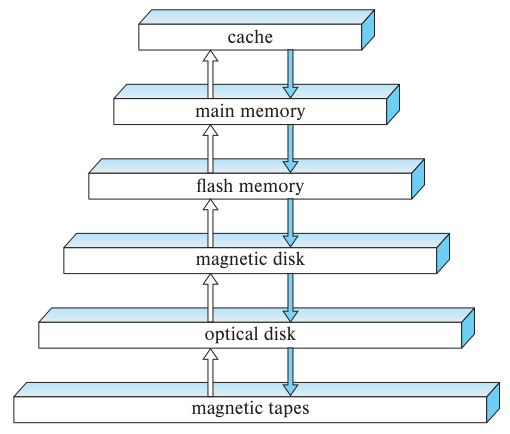
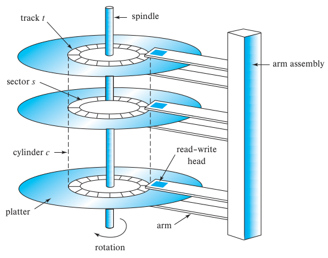
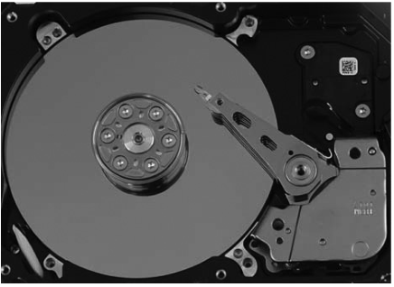
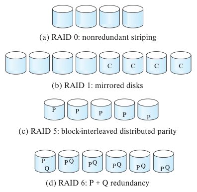

第12章 物理存储系统

前面各章着重讨论数据库的高层模型。例如，在概念层或逻辑层，我们把关系模型中的数据库看成一组表。数据库用户确实应当关注逻辑模型这一层，因为数据库系统的目标是简化数据访问、提供便利；系统物理实现中的细节不应给用户增添不必要的负担。
本章以及第13、14、15、16章将深入高层模型之下，介绍实现前面各章的数据模型和语言的各种方法。我们先讨论底层存储介质的特性，着重介绍磁盘和基于闪存的固态盘，再讨论如何利用多个存储设备构建高度可靠的存储结构。
12.1 物理存储介质概述
大多数计算机系统中存在多种数据存储方式。可以按照访问数据的速度、购买介质的单位数据成本，以及介质的可靠性对其分类。常见的介质包括以下几种。
- 高速缓存（cache）。高速缓存是速度最快、价格最高的存储形式，容量较小，由计算机系统硬件管理。本书不讨论数据库系统如何管理高速缓存。不过，数据库实现者在设计查询处理的数据结构和算法时，会考虑高速缓存的影响，后续章节还将讨论这一问题。
- 主存（main memory）。可以直接参与运算的数据存放在主存中，通用机器指令对主存进行操作。个人计算机的主存可以容纳几十GB数据，大型服务器系统的主存则可以容纳几百乃至几千GB数据。对于规模很大的数据库，主存通常容量不足，或成本过高，无法存放整个数据库；不过，许多企业数据库可以完全放入主存。断电或系统崩溃时，主存中的内容会丢失，因此称主存具有易失性。
- 闪存（flash memory）。闪存与主存的区别在于，关闭电源或发生断电后，存储的数据仍然保留，即闪存具有非易失性。闪存的每字节成本低于主存，高于磁盘。
闪存广泛用于相机、手机等设备的数据存储，也用于USB闪存盘，即U盘；U盘可以插入计算设备的通用串行总线（USB）接口。
闪存也越来越多地在个人计算机和服务器中替代磁盘。固态驱动器（solid-state drive，SSD）在内部用闪存保存数据，对外提供类似磁盘的接口，允许以块为单位存取数据；这种接口称为面向块的接口。块大小通常为512字节到8KB。截至2018年，1TB SSD的价格约为250美元。12.4节将详细介绍闪存。
- 磁盘存储。长期在线存储数据的主要介质是磁盘驱动器，也称硬盘驱动器（hard disk drive，HDD）。与闪存一样，磁盘具有非易失性：断电或系统崩溃后，磁盘上的数据仍能保留。磁盘有时也会发生故障并损坏数据，不过与系统崩溃和断电相比，这类故障少得多。
要访问磁盘上的数据，系统必须先将数据从磁盘移入主存，然后才能进行访问。系统执行完指定操作后，必须将修改过的数据写回磁盘。
多年来，磁盘容量持续增长。截至2018年，磁盘容量为500GB到14TB，1TB磁盘约50美元，8TB磁盘约150美元。磁盘的价格明显低于SSD，但每秒能够支持的数据访问操作次数也更少。12.3节将进一步介绍磁盘。
- 光学存储。数字视频光盘（DVD）是一种光学存储介质，利用激光光源写入和读回数据。Blu-ray DVD格式的容量为27GB到128GB，取决于支持的层数。DVD最初用于存储视频，这至今仍是它的主要用途，不过DVD可以保存任何类型的数字数据，包括数据库内容的备份。DVD不适合存放正在使用的数据库数据，因为与磁盘相比，访问指定数据所需的时间可能很长。
某些DVD只读，内容在生产工厂写入；另一些支持一次写入，写入后无法覆盖；还有一些可以多次改写。只能写入一次的光盘称为一次写入、多次读取（write-once, read-many，WORM）光盘。
光盘自动换盘系统（optical disk jukebox）配有少量驱动器和大量光盘，可按需通过机械臂自动将光盘装入某个驱动器。
- 磁带存储。磁带主要用于备份和归档数据。归档数据是必须长期安全保存的数据，往往出于法律方面的要求。磁带比磁盘便宜，能够安全保存数据多年。不过，磁带必须从带首顺序访问，而磁带可能很长，访问数据需要几十乃至几百秒，因此访问速度慢得多。基于这一特点，磁带存储称为顺序访问存储。磁盘和SSD可以读取任意位置的数据，称为直接访问存储。
磁带容量较大，目前可提供1TB到12TB容量，并且可以从磁带驱动器中取出。磁带驱动器通常价格较高，但单盘磁带一般比同等容量的磁盘便宜得多。因此，磁带适合低成本归档存储，也适合在不同地点之间传输大量数据。大型视频文件的归档，以及大量科学数据的保存，是磁带的两种常见用途；科学数据的规模可达到数PB，其中1PB等于10¹⁵字节。
磁带库，也称磁带自动换带系统，用于容纳大量磁带，无须人工干预即可自动存放和取用磁带。
各种存储介质可以按照速度和成本组织成层次结构，如图12.1所示。较高层的介质价格昂贵，但速度较快。沿层次向下，每比特成本降低，访问时间增加。这种权衡很合理：其他属性相同时，如果一种存储系统比另一种既快又便宜，就没有理由再使用后者。
速度最快的存储介质，例如高速缓存和主存，称为一级存储。下一层的介质，例如闪存和磁盘，称为二级存储或在线存储。最底层的介质，例如磁带和光盘自动换盘系统，称为三级存储或离线存储。

图12.1 存储设备层次结构。自上而下依次为高速缓存、主存、闪存、磁盘、光盘和磁带。
除了速度和成本，各种存储系统还存在易失性方面的差别。在图12.1的层次结构中，主存及其上方的存储系统具有易失性，闪存及其下方的存储系统具有非易失性。数据必须写入非易失性存储才能安全保存。第19章还将讨论系统发生故障时如何安全保存数据。
12.2 存储接口
磁盘和基于闪存的固态盘都通过高速互连与计算机系统连接。磁盘通常支持串行ATA（SATA）接口或串行连接SCSI（SAS）接口；SAS通常仅用于服务器。SATA的SATA-3版本标称支持每秒6GB，数据传输速度最高可达每秒600MB；SAS第3版支持每秒12Gbit的数据传输速率。非易失性存储器快速接口（Non-Volatile Memory Express，NVMe）是为更好地支持SSD而制定的逻辑接口标准，通常与PCIe接口配合使用；PCIe提供计算机系统内部的高速数据传输。
译注：原书此处将SATA-3的标称速率写为6 gigabytes per second，与随后给出的600MB/s不一致；原文单位保留于此，通常该标称速率应写为6Gbit/s。
磁盘通常通过电缆直接连接到计算机的磁盘接口，也可以位于远端，通过高速网络与计算机连接。在存储区域网络（storage area network，SAN）架构中，大量磁盘通过高速网络连接到若干服务器。这些磁盘通常在本地采用独立磁盘冗余阵列（redundant arrays of independent disks，RAID）技术组织起来，向服务器提供一个容量很大且十分可靠的逻辑磁盘视图。12.5节将介绍RAID。SAN采用的互连技术包括：允许通过IP网络发送SCSI命令的iSCSI；根据版本不同，支持每秒1.6GB到12GB传输速率的光纤通道（Fiber Channel，FC）；以及提供低延迟、高带宽网络通信的InfiniBand。
网络附加存储（network attached storage，NAS）是SAN的另一种选择。NAS与SAN很相似，区别是网络存储通过NFS或CIFS等网络文件系统协议提供文件系统接口，而非呈现为一个大磁盘。近年来，云存储也不断发展，数据保存在云端，通过API访问。如果数据与数据库不在同一位置，云存储的延迟会达到几十乃至几百毫秒，因此不适合作为数据库的底层存储。不过，应用经常使用云存储保存对象。21.7节将进一步讨论基于云的存储系统。
12.3 磁盘
磁盘承担现代计算机系统中的大部分二级存储。磁盘容量逐年稳步增长，大型应用的存储需求也在迅速增加，有时增长速度超过磁盘容量。达到互联网规模的超大型数据库，需要几千乃至几万块磁盘来保存数据。¹
近年来，SSD容量迅速增加，成本显著下降。价格逐渐降低，加上性能明显更好，使SSD在若干应用中越来越能够与磁盘竞争。不过，SSD的每字节存储成本仍约为磁盘的6到8倍，因此许多需要保存海量数据的应用仍然首选磁盘。这类数据包括视频和图像，以及许多互联网规模应用中的用户生成数据等访问较少的数据。对于企业数据，SSD则越来越成为首选。
12.3.1 磁盘的物理特性
图12.2是磁盘的结构示意图，图12.3展示实际磁盘的内部结构。每个盘片呈扁平圆形，两面覆盖磁性材料，信息记录在这些表面上。盘片由坚硬的金属或玻璃制成。
使用磁盘时，驱动电机带动它以恒定的高速旋转，典型转速为每分钟5400到10000转，具体取决于型号。读写磁头位于盘片表面的正上方。磁盘表面在逻辑上划分为磁道，磁道再划分为扇区。扇区是磁盘能够读取或写入的最小信息单位，通常为512字节；当代磁盘包含20亿到240亿个扇区。靠近主轴的内圈磁道比外圈磁道短，外圈磁道包含的扇区也更多。
¹ 第21章将研究如何在并行计算系统的多个节点之间划分这样的大量数据。

图12.2 磁盘结构示意图。图中标出了磁道t、扇区s、主轴、柱面c、盘片、磁盘臂、读写磁头、磁盘臂组件及旋转方向。
读写磁头通过反转磁性材料的磁化方向，将信息以磁的形式存入扇区。

图12.3 实际磁盘的内部结构。
磁盘每个盘片的每一面都有一个读写磁头，磁头沿盘片移动，以访问不同磁道。磁盘通常包含多个盘片，各磁道的读写磁头安装在同一个称为磁盘臂的组件上，一起移动。安装在主轴上的盘片和安装在磁盘臂上的磁头合称磁头磁盘组件。由于所有盘片上的磁头一起移动，当某个盘片的磁头位于第i条磁道时，其他盘片的磁头也都位于各自盘片的第i条磁道。因此，所有盘片的第i条磁道合称第i个柱面。
为提高记录密度，读写磁头应尽量靠近磁盘表面。磁头通常悬浮或飞行在距盘面仅几微米的位置。磁盘旋转会产生微弱气流，磁头组件的形状使气流能够将磁头托起，使其悬浮在盘面上方。磁头离盘面如此之近，因此盘片必须经过精密加工，确保平整。
磁头碰撞可能造成问题。磁头一旦接触盘面，可能刮掉磁盘上的记录介质，破坏原有数据。早期磁盘中，被刮掉的介质会飞散到空气里，进入其他磁头与盘片之间，引发更多碰撞；一次磁头碰撞可能导致整块磁盘失效。当代磁盘使用磁性金属薄膜作为记录介质，整盘失效的风险低得多，但个别扇区仍可能失效。
磁盘控制器连接计算机系统与磁盘驱动器的实际硬件；现代磁盘系统将控制器实现在驱动器内部。控制器接收读写扇区的高层命令，然后发起相应动作，例如将磁盘臂移到正确磁道并实际读写数据。控制器还会为每个写入的扇区附加校验和，该校验和根据写入数据计算得出。读回扇区时，控制器根据读出的数据重新计算校验和，并与存储的校验和比较。如果数据已损坏，新计算的校验和很可能与原值不符。出现此类错误时，控制器会重试读取数次；如果错误持续出现，就报告读取失败。
磁盘控制器还承担坏扇区重映射任务。如果控制器在磁盘初始格式化时，或尝试写入某个扇区时，发现扇区已损坏，就可以将它在逻辑上映射到另一个物理位置；新位置从专门预留的备用扇区池分配。重映射关系记录在磁盘或非易失性存储器中，实际写入则在新位置进行。
12.3.2 磁盘的性能指标
衡量磁盘品质的主要指标是容量、访问时间、数据传输率和可靠性。
访问时间是从发出读写请求到数据传输开始之间的时间。要访问，即读取或写入磁盘上指定扇区的数据，必须先移动磁盘臂，使磁头位于正确磁道上，再等待磁盘旋转，将该扇区送到磁头下方。重新定位磁盘臂所需的时间称为寻道时间，磁盘臂移动距离越大，寻道时间越长。典型寻道时间为2到20毫秒，取决于目标磁道与磁盘臂初始位置之间的距离。较小的磁盘通常寻道时间较短，因为磁头需要移动的距离较小。
平均寻道时间是在一系列均匀分布的随机请求上测得的寻道时间平均值。如果所有磁道的扇区数相同，并忽略磁头启动和停止所需的时间，可以证明平均寻道时间是最坏情况下寻道时间的三分之一。考虑这些因素后，平均寻道时间约为最大寻道时间的一半。目前平均寻道时间为4到10毫秒，取决于磁盘型号。²
磁头到达目标磁道后，等待待访问扇区旋转到磁头下方所需的时间，称为旋转延迟时间。当今磁盘转速为每分钟5400转，即每秒90转，到每分钟15000转，即每秒250转；相应地，每转耗时4到11.1毫秒。平均而言，需要等待半圈，目标扇区的起始位置才会出现在磁头下方。因此，平均旋转延迟是磁盘旋转一整圈所需时间的一半。需要尽量降低延迟的应用会使用转速更高的磁盘。
访问时间等于寻道时间与旋转延迟之和。根据磁盘型号不同，平均访问时间为5到20毫秒。待访问数据的第一个扇区到达磁头下方后，数据传输开始。数据传输率是从磁盘读取数据或向磁盘存储数据的速率。当代磁盘系统的最高传输率为每秒50MB到200MB；内圈磁道的扇区较少，其传输率明显低于最高值。例如，最高传输率为每秒100MB的磁盘，在内圈磁道上的持续传输率可能约为每秒30MB。
磁盘I/O请求通常由文件系统产生，也可以由数据库系统直接产生。每个请求都指定要访问的磁盘地址，地址采用块号形式。磁盘块是存储分配和读取的逻辑单位，当今块大小通常为4到16KB。磁盘与主存之间以块为单位传输数据。“页”也常用来指块，不过在闪存等少数语境中，两者指不同的事物。
² 较小的2.5英寸磁盘比3.5英寸磁盘的磁盘臂移动距离短，因此寻道时间更短。需要尽量降低延迟的应用曾首选2.5英寸磁盘，不过现在越来越倾向于SSD。较大的3.5英寸磁盘每字节成本较低，适用于重视成本的数据存储应用。
连续的磁盘块请求可以分为顺序访问模式和随机访问模式。顺序访问模式中，相继请求的块号连续，位于同一磁道或相邻磁道上。顺序读取时，第一个块可能需要寻道，后续请求则无须寻道，或者只需移到相邻磁道，所需时间比移到较远磁道更短。顺序访问的寻道时间最少，因此数据传输率最高。
随机访问模式中，相继请求的块随机分布在磁盘上，每个请求都需要寻道。每秒I/O操作数（I/O operations per second，IOPS）表示磁盘一秒钟内能够完成的随机块访问次数，取决于访问时间、块大小和磁盘的数据传输率。块大小为4KB时，当代磁盘根据型号不同，可支持50到200 IOPS。每次寻道只读取一个块这样少量的数据，因此随机访问的数据传输率明显低于顺序访问。
最后一个常用指标是平均无故障时间（mean time to failure，MTTF），³ 用于衡量磁盘可靠性。磁盘或任何其他系统的平均无故障时间，是预期系统能够连续运行而不发生任何故障的平均时长。厂商宣称当今磁盘的MTTF为50万到120万小时，约合57到136年。实际计算这一指标时，采用的是磁盘较新时的故障概率：若MTTF为120万小时，则对1000块较新的磁盘，平均每1200小时会有一块发生故障。120万小时的MTTF并不意味着磁盘可以工作136年！大多数磁盘的预期使用寿命约为5年，使用数年后，故障率会明显升高。
12.4 闪存
闪存分为NOR闪存和NAND闪存，数据存储主要采用NAND闪存。读取NAND闪存时，需要将一整页数据从闪存取入主存，一页通常为4096字节。因此，NAND闪存中的页类似于磁盘中的扇区。
³ 在磁盘驱动器语境中，平均故障间隔时间（mean time between failures，MTBF）常用来指MTTF。不过，严格来说，MTBF只应用于故障后可以修复、随后可能再次发生故障的系统；此时MTBF等于MTTF加上平均修复时间。磁盘发生故障后几乎都无法修复。
固态盘（SSD）由NAND闪存构成，提供与磁盘存储相同的面向块的接口。SSD的随机访问速度比磁盘快得多：读取一页数据的延迟为20到100微秒，磁盘随机访问则需要5到10毫秒。SSD的数据传输率也高于磁盘，通常受互连技术限制。根据SSD具体型号不同，SATA接口的传输率约为每秒500MB，NVMe PCIe接口可达每秒3GB；磁盘的最高传输率则约为每秒200MB。SSD的功耗也明显低于磁盘。
闪存写入稍复杂一些。写入一页通常约需100微秒，但一旦写入，就无法直接覆盖该页，必须先擦除，再重新写入。擦除操作必须作用于一组页，称为擦除块，将块内所有页一起擦除，耗时约2到5毫秒。擦除块在闪存文献中常简称为“块”，大小通常为256KB到1MB，包含约128到256页。此外，闪存页的擦除次数有限，通常约为10万到100万次。达到上限后，存储比特时就容易发生错误。
闪存系统通过将逻辑页号映射到物理页号，减轻擦除速度慢和更新次数有限的影响。更新逻辑页时，可以将其重新映射到任何已擦除的物理页，原位置留待以后擦除。每个物理页都有一小块存储区保存其逻辑地址；如果逻辑地址重新映射到另一个物理页，原物理页就被标记为已删除。因此，扫描物理页就可以找出每个逻辑页所在的位置。逻辑页到物理页的映射还会复制到内存中的转换表，以便快速访问。
包含多个已删除页的块会被定期擦除，擦除前必须先把块内未删除的页复制到其他块，并更新这些页的转换表。由于每个物理页只能更新有限次数，系统会将很少更新的“冷数据”分配给已擦除多次的物理页，而用擦除次数较少的物理页保存频繁更新的“热数据”。这种将擦除操作均匀分散到各物理块的原则称为磨损均衡（wear leveling），通常由闪存控制器透明地执行。如果某个物理页因更新次数过多而损坏，可以停止使用该页，而不影响整个闪存。
上述操作都由称为闪存转换层（flash translation layer）的一层软件完成。在这一层之上，闪存呈现出与磁盘相同的存储形式，提供相同的面向页或扇区的接口，只是速度快得多。这样，无论底层采用闪存还是磁盘，文件系统和数据库存储结构都能看到相同的逻辑存储视图。
注12.1 存储级内存
闪存虽然是使用最广泛的非易失性存储器，但多年来还发展出了多种其他非易失性存储技术。其中一些允许直接读写单个字节或字，无须以页为单位读写，也避免了NAND闪存的擦除开销。这些非易失性存储器可以视为一大块非易失内存，称为存储级内存（storage class memory）。Intel与Micron开发的3D-XPoint是近年出现的一项存储级内存技术。就每字节成本、访问延迟和容量而言，3D-XPoint位于主存与闪存之间。基于3D-XPoint的Intel Optane SSD于2017年开始出货，Optane持久内存模块于2018年发布。
SSD的性能通常用以下指标表示。
- 每秒随机块读取次数，标准块大小为4KB。2018年的典型值为每秒约10000次4KB随机读取，也称10000 IOPS；某些型号支持更高的速率。
SSD能够并行支持多个随机请求，常见的是32个并行请求，磁盘则不具备这种能力。通过SATA接口连接的闪存盘在同时发送32个请求时，每秒可随机读取近100000个4KB块；采用NVMe PCIe连接的SSD每秒可随机读取超过350000个4KB块。这些指标中，不使用并行时的速率记为QD-1，采用n路并行时记为QD-n，QD-32是最常用的指标。
- 顺序读和顺序写的数据传输率。采用SATA 3接口的SSD，顺序读写的典型速率均为每秒400MB到500MB；通过PCIe 3.0×4接口使用NVMe的SSD，典型速率为每秒2GB到3GB。
- 每秒随机块写入次数，标准块大小为4KB。2018年的典型值是：QD-1，即不使用并行时，每秒约40000次4KB随机写入；QD-32时约为100000 IOPS。一些型号在QD-1和QD-32下都支持更高的速率。
混合硬盘将磁性存储与少量闪存结合，用闪存缓存经常访问的数据。访问频繁而更新较少的数据，适合缓存在闪存中。
现代SAN和NAS系统支持混合使用磁盘与SSD，可以配置为用SSD缓存磁盘上的数据。
12.5 RAID
某些应用，尤其是Web、数据库和多媒体应用，数据存储需求增长很快。尽管磁盘驱动器容量也迅速增长，这些应用仍需要大量磁盘保存数据。
如果让系统中的大量磁盘并行工作，就有机会提高数据读写速率，也可以并行执行多个独立的读写操作。此外，多块磁盘可以保存冗余信息，提高数据存储的可靠性，使单块磁盘失效不致造成数据丢失。
为提高性能和可靠性，人们提出了多种磁盘组织技术，统称为独立磁盘冗余阵列（RAID）。
过去，小容量磁盘的每MB成本低于大容量磁盘，系统设计者认为，用多个廉价的小磁盘组成存储系统，是替代昂贵大磁盘的一种经济方案。RAID中的I如今代表independent，即独立，最初则代表inexpensive，即廉价。现在，所有磁盘的物理尺寸都很小，容量更大的磁盘每MB成本实际上更低。采用RAID主要是为了更高的可靠性与性能，经济因素已非主要原因。管理和运维更方便也是采用RAID的重要理由。
12.5.1 通过冗余提高可靠性
先考虑可靠性。N块磁盘中至少有一块失效的概率，远高于某一块指定磁盘失效的概率。假设一块磁盘的平均无故障时间为100000小时，即略多于11年。那么，100块磁盘组成的阵列中，某块磁盘发生故障的平均间隔就是100000/100＝1000小时，约42天，时间并不长！如果数据只保存一份，每次磁盘故障都会导致大量数据丢失，如12.3.1节所述。这样高频率的数据丢失无法接受。
解决可靠性问题的方法是引入冗余，即保存平时用不到的额外信息，磁盘失效时则用它重建丢失的信息。这样，即使磁盘发生故障，数据也不会丢失。如果仅将导致数据丢失或数据不可用的事件计为故障，系统的有效平均无故障时间就会增加。
引入冗余最简单、也最昂贵的方法，是为每块磁盘保留一个副本，称为镜像（mirroring），有时也称影子复制（shadowing）。此时，一个逻辑磁盘由两个物理磁盘组成，每次写入都在两块磁盘上执行。如果其中一块失效，可以从另一块读取数据。只有在第一块故障磁盘修复之前，第二块也失效，才会丢失数据。
镜像磁盘的平均无故障时间，此处故障指数据丢失，取决于单块磁盘的MTTF和平均修复时间。平均修复时间是更换故障磁盘并恢复其中数据平均需要的时间。假设两块磁盘的故障相互独立，即一块磁盘失效与另一块失效无关。若单块磁盘的MTTF为100000小时，平均修复时间为10小时，那么镜像系统的平均数据丢失时间为100000²/(2×10)＝500×10⁶小时，即57000年！这里不展开推导，书目说明中的参考文献给出了细节。
需要注意，磁盘故障相互独立这一假设不符合实际情况。断电以及地震、火灾、洪水等自然灾害可能同时损坏两块磁盘。磁盘老化后，故障概率增加，在修复第一块磁盘期间第二块也失效的可能性随之提高。尽管有这些因素，镜像磁盘系统仍比单磁盘系统可靠得多。目前已有镜像磁盘系统的平均数据丢失时间约为50万到100万小时，即55到110年。
断电需要格外关注，因为它远比自然灾害频繁。如果断电时没有正在向磁盘传输的数据，就无须担心这一问题。但是，即使采用镜像，若两块磁盘正在写入同一个块，且两边都尚未写完时发生断电，这两个块也可能处于不一致状态。解决办法是先写一个副本，再写另一个，保证两个副本中总有一个是一致的。断电后重启时，还需要执行一些额外操作，从未完成的写入中恢复。练习12.6将研究这一问题。
12.5.2 通过并行提高性能
再看并行访问多块磁盘的收益。采用磁盘镜像后，读取请求可以发给任一磁盘，只要一对磁盘都正常工作，而这几乎总能满足。可处理读取请求的速率因此翻倍。每次读取的传输率仍与单盘系统相同，但单位时间内的读取次数增加了一倍。
使用多个磁盘时，还可以通过将数据条带化分布到多个磁盘来提高传输率；它既可以与前述方法结合，也可以单独使用。数据条带化最简单的形式，是将每个字节的各个比特分散到多个磁盘，称为比特级条带化。例如，若阵列有8块磁盘，就把每个字节的第i个比特写到第i块磁盘。在这种组织中，每次读写都需要所有磁盘参与，因此每秒可处理的访问次数与单块磁盘大致相同，但每次访问在相同时间内可以读取单盘8倍的数据。
块级条带化将块分布在多个磁盘上。它把磁盘阵列视为一个大磁盘，并为块分配逻辑编号，假设块号从0开始。对于n块磁盘组成的阵列，块级条带化将逻辑块i分配给第(i mod n)＋1块磁盘，并存放在该盘的第⌊i/n⌋个物理块中。例如，有8块磁盘时，逻辑块0位于磁盘1的物理块0中，逻辑块11位于磁盘4的物理块1中。读取大文件时，块级条带化可以从n块磁盘并行获取n个块，使大规模读取获得较高的数据传输率。读取单个块时，传输率与单盘相同，但其余n−1块磁盘可以执行其他操作。
块级条带化相对于比特级条带化有多种优点，包括每秒能够完成更多块读取，以及单块读取延迟更低。因此，实际系统都不使用比特级条带化。
概括来说，磁盘系统并行化有两个主要目标：
- 在多个小规模访问，即块访问之间进行负载均衡，提高此类访问的吞吐量。
- 并行执行大规模访问，缩短这类访问的响应时间。
12.5.3 RAID级别
镜像的可靠性高，但成本昂贵。条带化的数据传输率高，但不能提高可靠性。其他多种方案尝试将磁盘条带化与奇偶校验块结合，以更低的成本提供冗余。
后面将看到，RAID系统把块划分为若干组。对于给定的一组块，可以计算一个奇偶校验块并存入磁盘：其第i个比特是组内所有块第i个比特的异或（exclusive or，XOR）结果。如果组内任意一个块因故障丢失，可以将其余块和奇偶校验块逐位异或，恢复丢失块的内容。
每次写入一个块，都必须重新计算该组的奇偶校验块并写入磁盘。新校验块可以通过两种方法计算：其一，读出组内所有其他块，计算新校验块；其二，将旧校验块、被更新块的旧值及其新值进行异或运算。
这些方案在成本与性能之间采用不同的权衡，划分为不同的RAID级别。⁴ 图12.4展示实际使用的4种级别，其中P表示纠错比特，C表示数据的第二份副本。所有级别的示例都包含相当于4块磁盘容量的数据，其余磁盘用于保存故障恢复所需的冗余信息。
⁴ RAID共有7个不同级别，编号为0到6。级别2、3、4已不再实际使用，因此正文不作介绍。

图12.4 RAID级别。（a）RAID 0：无冗余条带化；（b）RAID 1：磁盘镜像；（c）RAID 5：块交错分布式奇偶校验；（d）RAID 6：P＋Q冗余。
- RAID 0级：采用块级条带化，但没有镜像或奇偶校验位等任何冗余。图12.4a展示了包含4块磁盘的阵列。
- RAID 1级：结合块级条带化的磁盘镜像。图12.4b的镜像组织能够容纳相当于4块磁盘容量的数据。
有些厂商用RAID 1＋0或RAID 10表示带条带化的镜像，用RAID 1表示不带条带化的镜像。磁盘阵列也可以采用不带条带化的镜像，对外呈现为一个容量大且可靠的磁盘：若每块磁盘有M个块，则逻辑块0到M−1放在磁盘0中，M到2M−1放在磁盘1，即第二块磁盘中，依此类推，再为每块磁盘建立镜像。⁵
- RAID 5级：块交错分布式奇偶校验。数据和奇偶校验信息分布在全部N＋1块磁盘上。对于每组N个逻辑块，其中一块磁盘保存奇偶校验，其余N块磁盘保存数据块。不同组的奇偶校验块放在不同磁盘上，这样所有磁盘都能够处理读取请求。⁶
图12.4c展示了这种组织，P分布在所有磁盘中。例如，在包含5块磁盘的阵列中，逻辑块4k、4k＋1、4k＋2、4k＋3对应的奇偶校验块记为Pₖ，存于磁盘k mod 5；其余4块磁盘的相应位置存放这4个数据块。下表展示编号0到19的前20个块及其奇偶校验块的布局，后续块重复相同的布局模式。
| 磁盘0 | 磁盘1 | 磁盘2 | 磁盘3 | 磁盘4 |
|---|---|---|---|---|
| P₀ | 0 | 1 | 2 | 3 |
| 4 | P₁ | 5 | 6 | 7 |
| 8 | 9 | P₂ | 10 | 11 |
| 12 | 13 | 14 | P₃ | 15 |
| 16 | 17 | 18 | 19 | P₄ |
⁵ 一些厂商用RAID 0＋1表示另一种方案：先通过条带化建立RAID 0阵列，再将整个阵列镜像到另一个阵列。它与RAID 1的区别是，一块磁盘失效会使其所在的RAID 0阵列不可用。另一个镜像阵列仍可使用，因此不会丢失数据。发生单盘故障后，这种安排的表现不及RAID 1，因为RAID 1中该RAID 0阵列的其他磁盘仍可继续使用，而RAID 0＋1会让它们闲置。
⁶ RAID 4级目前已不实际使用，它把所有奇偶校验块存放在一块磁盘上。该磁盘不能用于普通数据读取，而且随机写入较多时，它的负载高于其他磁盘。
奇偶校验块不能为同一磁盘上的数据块保存校验信息，否则磁盘失效时，数据和校验信息会同时丢失，无法恢复。
- RAID 6级，即P＋Q冗余方案：与RAID 5相似，但保存额外的冗余信息，以应对多块磁盘失效。RAID 6采用Reed–Solomon码等纠错码，取代单纯的奇偶校验，相关资料见书目说明。在图12.4g所示的方案中，每4个数据比特保存2个冗余比特，RAID 5则只保存1个奇偶校验比特。该系统能够容忍两块磁盘失效。
译注：原书此处引用“图12.4g”，实际对应图12.4d。
图中的P和Q表示一组数据块对应的两个纠错块。块的布局是RAID 5的扩展。例如，有6块磁盘时，逻辑块4k、4k＋1、4k＋2、4k＋3对应的两个校验块Pₖ和Qₖ，分别存放在磁盘k mod 6和(k＋1) mod 6上；其余4块磁盘的相应位置存放这4个数据块。
最后，上述基本RAID方案还有许多变体，不同厂商使用的名称也不同。有些厂商支持嵌套方案：先建立多个独立的RAID阵列，再将数据条带化分布到这些阵列中；每个阵列可选择RAID 1、5或6。相关资料见本章末尾的“进一步阅读”。
12.5.4 硬件问题
RAID可以完全通过软件修改实现，无须改变硬件，这种实现称为软件RAID。不过，为RAID构建专用硬件能够带来显著收益，下文将作介绍。具有专用硬件支持的系统称为硬件RAID系统。
硬件RAID可以使用非易失性RAM，在实际执行写入前记录写入操作。如果发生断电，系统恢复运行后，从非易失性RAM中取得尚未完成的写入信息，完成这些写入，然后开始正常工作。
软件RAID则需要额外工作，检测断电前可能只写入了一部分的块。对于RAID 1，需要扫描磁盘中的所有块，检查两块磁盘上对应的块内容是否不同。对于RAID 5，需要扫描磁盘，为每组块重新计算奇偶校验，并与保存的校验值比较。这种扫描耗时较长，通常在后台进行，只使用磁盘可用带宽的一小部分。发现不一致时，如何将数据恢复到最新值，详见练习12.6；19.2.1节还会结合数据库恢复再讨论此问题。这个阶段称为RAID系统的重新同步（resynchronizing，也简称resynching）。重新同步期间允许正常读写，但若此时有磁盘失效，未完成写入的块可能会丢失数据。硬件RAID没有这一限制。
即使所有写入都正常完成，某个扇区日后仍有小概率变得无法读取。个别扇区丢失数据的原因可能是制造缺陷，也可能是反复写入相邻磁道导致该磁道数据损坏。先前成功写入的数据随后丢失，有时称为潜在故障（latent failure）或比特腐坏（bit rot）。如果及早发现，可以利用RAID中其余磁盘恢复数据；如果一直没有发现，则另一块磁盘失效时，可能因为其余磁盘中某个扇区存在潜在故障而导致数据丢失。
为降低此类数据丢失的概率，设计良好的RAID控制器会执行巡检（scrubbing）：在磁盘空闲时，读取每块磁盘的每个扇区；如果发现扇区无法读取，就利用RAID中其余磁盘恢复数据，再写回该扇区。如果物理扇区损坏，磁盘控制器会将逻辑扇区地址重映射到其他物理扇区。
服务器硬件通常支持热插拔，即无须关闭电源，就能移除故障磁盘并换上新盘。RAID控制器可以检测到磁盘已更换，立即重建原盘上的数据并写入新盘。热插拔缩短了平均修复时间，因为更换磁盘无须等到系统可以关机时再进行。事实上，许多重要系统采用24×7运行方式，即每天24小时、每周7天持续运行，没有停机更换故障磁盘的时间。此外，许多RAID实现在每个阵列或一组阵列中安排一块备用磁盘。一旦某盘失效，备用盘立即接替，大幅缩短平均修复时间，尽量降低数据丢失的可能性。故障磁盘则可以在方便时再更换。
RAID系统的电源、磁盘控制器，甚至系统互连，都可能成为单点故障，使整个RAID系统停止工作。为避免这种情况，设计良好的RAID实现配备多个冗余电源，并有备用电池，在断电时仍能继续运行。它们还配有多个磁盘接口和多条互连，将RAID系统连接到计算机或计算机网络。这样，任何单个组件发生故障都不会使RAID系统停止工作。
12.5.5 RAID级别的选择
选择RAID级别时，应考虑以下因素：
- 额外磁盘存储需求的资金成本。
- 每秒I/O操作数方面的性能要求。
- 磁盘失效时的性能。
- 重建期间的性能，即将故障磁盘的数据重建到新磁盘上时的性能。
重建故障磁盘的数据可能耗时很长，具体取决于RAID级别。RAID 1的重建最简单，只需从另一块磁盘复制数据；其他级别则需要访问阵列中所有其他磁盘，才能重建故障盘的数据。如果像高性能数据库系统那样，要求数据持续可用，RAID的重建性能就可能成为重要因素。此外，重建可能占修复时间的很大一部分，因此也会影响平均数据丢失时间。
RAID 0仅用于少数对数据安全要求不高的高性能应用，其他场景不采用它。
RAID 1提供最佳写入性能，因而广泛用于数据库日志文件等存储场景。RAID 5的存储开销低于RAID 1，但写入时间开销更高。对于读取频繁、写入很少的应用，RAID 5是首选。
多年来，磁盘存储容量增长迅速，一度大致每13个月翻一番；尽管现在的增长速度已明显放缓，容量仍在快速增加。每字节存储成本的下降速度与容量增长速度大致相当。对于许多存储需求适中的现有数据库应用，为镜像额外购买磁盘的成本已经较低。不过，视频数据存储等存储密集型应用仍然需要认真考虑这部分额外开支。近年磁盘访问速度没有显著提高，而应用所需的每秒I/O操作数大幅增加，Web应用服务器尤其如此。
RAID 5的随机写入开销较大，因为一次随机块写入需要两次块读取，以取得数据块和校验块的旧值，再进行两次块写入，把两者写回。对于大规模顺序写入，开销则较低，因为大多数情况下，可以直接根据新的数据块计算校验块，无须读取。因此，对于许多存储需求适中、随机I/O需求较高的应用，RAID 1是首选级别。
RAID 6能够容忍两块磁盘失效而不丢失数据，可靠性优于RAID 1和5。正常运行时，它的性能与RAID 5相似，但存储成本更高。RAID 6用于数据安全非常重要的应用，人们越来越重视它，因为扇区潜在故障并不少见，而且可能很久以后才会被发现和修复。在潜在故障被发现并修复前，如果另一块磁盘失效，对该扇区而言就类似于两块磁盘同时失效，会造成扇区数据丢失。RAID 1和5在这种情况下会丢失数据，RAID 6则能够应对。
镜像也可以扩展为在3块磁盘上保存副本，从而容忍两块磁盘失效。三重冗余在RAID系统中并不常用，但在将数据存放于多台机器的分布式文件系统中会采用，因为整台机器失效的概率明显高于单块磁盘失效的概率。
RAID设计者还需要作出其他决定。例如，一个阵列应包含多少块磁盘？每个奇偶校验位应保护多少数据位？阵列中的磁盘越多，数据传输率越高，系统也越昂贵。一个校验位保护的数据位越多，校验位的空间开销越低，但在第一块故障磁盘修复前，第二块磁盘也失效的概率会增大，可能造成数据丢失。
12.5.6 RAID的其他应用
RAID的思想已扩展到其他存储设备，包括SSD内部的闪存设备、磁带阵列，乃至无线系统的数据广播。单个闪存页的数据丢失率高于磁盘扇区，SSD等闪存设备会在内部实现RAID，确保单个闪存页丢失不会导致整个设备的数据丢失。应用于磁带阵列时，即使一盘磁带损坏，RAID结构也能够恢复数据。应用于广播时，将一个数据块划分为较短的单元，连同一个奇偶校验单元一起广播；如果某个单元因任何原因没有收到，可以利用其他单元将其重建。
12.6 磁盘块访问
磁盘I/O请求由数据库系统产生，其中大部分由查询处理子系统发起。每个请求指定磁盘标识符及该磁盘上的逻辑块号；如果数据库数据保存在操作系统文件中，则指定文件标识符和文件内部的块号。磁盘与主存之间以块为单位传输数据。
前面提到，一系列磁盘块请求可以分为顺序访问和随机访问。顺序访问中，相继请求的块号连续，位于同一磁道或相邻磁道；随机访问中，相继请求的块随机分布在磁盘上，每次请求都需要寻道，因此访问时间更长，每秒能完成的随机I/O操作数更少。
人们提出了多种技术，通过减少访问次数，尤其是随机访问次数，提高块访问速度。下面介绍这些技术。对于磁盘上的数据，减少随机访问十分重要。SSD的随机访问比磁盘快得多，所以受到的影响较小，但以下某些技术仍能改善SSD的数据访问。
- 缓冲。从磁盘读取的块暂存在内存缓冲区中，以满足未来请求。操作系统和数据库系统都执行缓冲。13.5节将详细讨论数据库缓冲。
- 预读。访问一个磁盘块时，即使同一磁道上紧接着的块还没有待处理请求，也先将它们读入内存缓冲区。对于顺序访问，预读可以使许多块在被请求时已经位于内存，尽量减少每块读取所耗费的寻道时间和旋转延迟。操作系统也经常对文件中的连续块进行预读。不过，预读对随机块访问作用不大。
- 调度。如果需要将同一柱面中的多个块从磁盘传到主存，可以按它们经过磁头下方的顺序请求，从而节省访问时间。如果目标块位于不同柱面，则应按尽量减少磁盘臂移动的顺序请求。磁盘臂调度算法通过调整磁道访问顺序，增加能够处理的访问次数。常用的是电梯算法，其工作方式类似许多电梯。假设磁盘臂起初从最内圈向外移动。在电梯算法控制下，每遇到有访问请求的磁道就停下，完成该磁道的请求，再继续向外，直到更外侧没有等待请求。然后磁盘臂改变方向，向内移动，再次在每个有请求的磁道停下，直到更靠近中心的位置已没有请求；接着再次反向，开始新一轮循环。
磁盘控制器熟悉块的实际布局、盘片当前旋转位置以及磁盘臂位置，通常由它重新排序读取请求，以提高性能。为了支持重新排序，磁盘控制器接口必须允许多个请求进入队列，结果可以按不同于请求顺序的次序返回。
- 文件组织。为缩短块访问时间，可以让磁盘上的块组织方式尽量符合预期的数据访问方式。例如，若预计文件将被顺序访问，理想情况下应将它的所有块依次放在相邻柱面上。现代磁盘对操作系统隐藏块的确切位置，但采用逻辑编号，使相邻块具有连续编号。操作系统将文件中连续的块分配到编号连续的磁盘块上，从而保证文件按顺序存放。
将一个大文件保存为很长的一串连续块，会给磁盘块分配带来困难。操作系统通常每次为文件分配一定数量的连续块，称为区段（extent）。同一文件的不同区段在磁盘上可能并不相邻。顺序访问时，每个区段只需一次寻道；如果随机分配各块，则每块都需要寻道。区段足够大时，寻道成本相对于数据传输成本就可以降到很低。
经过多次小规模追加后，顺序文件可能逐渐产生碎片，即文件块散落在磁盘各处。为减少碎片，可以先备份磁盘数据，再恢复整个磁盘。恢复时，会将每个文件的块连续或近乎连续地写回。有些系统，例如不同版本的Windows操作系统，还提供工具扫描磁盘并移动块，以减少碎片。这些方法可以显著提高性能。
- 非易失性写缓冲区。主存内容会在断电时丢失，因此必须将数据库更新信息记录到磁盘，才能经受可能发生的系统崩溃。事务处理等更新密集型数据库应用的性能，因此高度依赖磁盘写入延迟。
可以利用非易失性随机存取存储器（non-volatile random-access memory，NVRAM）加速磁盘写入，其内容不会在断电时丢失。早期NVRAM采用电池后备RAM实现，目前非易失性写缓冲主要采用闪存。基本方法是：数据库系统或操作系统请求将块写入磁盘时，磁盘控制器先把块写入非易失性写缓冲区，立即通知操作系统写入已成功完成；随后再利用电梯算法等方法，尽量减少磁盘臂移动，将数据写到磁盘上的目标位置。如果没有非易失性写缓冲就这样重排写入，系统崩溃时可能使数据库处于不一致状态，因为第19章将介绍的恢复算法依赖写入按指定顺序执行。数据库请求块写入时，只有NVRAM缓冲区已满才会感受到延迟。系统从崩溃中恢复时，会把NVRAM中尚未完成的缓冲写入全部写回磁盘。有些高端磁盘配备NVRAM缓冲区，不过它更常见于RAID控制器。
除了这些底层优化，还可以通过精心设计查询处理算法，在更高层减少随机访问。第15章将介绍高效查询处理技术。
12.7 总结
- 大多数计算机系统中存在多种数据存储方式，可以按照数据访问速度、购买介质的单位数据成本及可靠性分类。常见介质包括高速缓存、主存、闪存、磁盘、光盘和磁带。
- 磁盘是机械设备，访问数据需要先将读写磁头移到目标柱面，再等待盘片旋转，将目标扇区送到磁头下方，因此数据访问延迟较高。
- SSD的数据访问延迟远低于磁盘，数据传输带宽更高，但每字节成本也更高。
- 磁盘可能发生故障，导致其中的数据丢失。保存数据的多个副本，可以降低数据无法恢复的风险。
- 镜像大幅降低了数据丢失的概率。更复杂的独立磁盘冗余阵列（RAID）方法还能带来其他好处：将数据条带化分布到多个磁盘，可以提高大规模访问的吞吐率；在磁盘之间引入冗余，可以显著提高可靠性。
- RAID有多种组织方式，成本、性能和可靠性各有不同。最常用的是RAID 1，即镜像，以及RAID 5。
- 磁盘块访问可以通过预读、缓冲、磁盘臂调度、预取和非易失性写缓冲等技术优化。
复习术语
- 物理存储介质
- 高速缓存
- 主存
- 闪存
- 磁盘
- 光学存储
- 磁带存储
- 易失性存储
- 非易失性存储
- 顺序访问
- 直接访问
- 存储接口
- 串行ATA（SATA）
- 串行连接SCSI（SAS）
- 非易失性存储器快速接口（NVMe）
- 存储区域网络（SAN）
- 网络附加存储（NAS）
- 磁盘
- 盘片
- 硬盘
- 磁道
- 扇区
- 读写磁头
- 磁盘臂
- 柱面
- 磁盘控制器
- 校验和
- 坏扇区重映射
- 磁盘块
- 磁盘性能指标
- 访问时间
- 寻道时间
- 延迟时间
- 每秒I/O操作数（IOPS）
- 旋转延迟
- 数据传输率
- 平均无故障时间（MTTF）
- 闪存存储
- 擦除块
- 磨损均衡
- 闪存转换表
- 闪存转换层
- 存储级内存
- 3D-XPoint
- 独立磁盘冗余阵列（RAID）
- 镜像
- 数据条带化
- 比特级条带化
- 块级条带化
- RAID级别
- 0级：块条带化，无冗余
- 1级：块条带化，镜像
- 5级：块条带化，分布式奇偶校验
- 6级：块条带化，P＋Q冗余
- 重建性能
- 软件RAID
- 硬件RAID
- 热插拔
- 磁盘块访问优化
- 磁盘臂调度
- 电梯算法
- 文件组织
- 碎片整理
- 非易失性写缓冲区
- 日志磁盘
实践练习
12.1 SSD可以作为位于内存与磁盘之间的存储层，将数据库的一部分，例如某些关系，保存在SSD上，其余部分保存在磁盘上。也可以将SSD用作磁盘的缓冲区或高速缓存：经常使用的块保存在SSD层，不常使用的块保存在磁盘上。
a. 若需要支持实时查询，保证在很短的时间内给出结果，应选择哪种方案？解释原因。
b. 若有一个很大的customer关系，只有其中部分磁盘块被频繁访问，其余块很少访问，应选择哪种方案？
12.2 有些数据库只使用磁盘外圈磁道上的扇区，将内圈磁道的扇区闲置。这样做可能有什么好处？
12.3 关于闪存存储：
a. 如何在内存中建立闪存转换表，用于将逻辑页号映射到物理页号？
b. 假设有一个64GB闪存存储系统，页大小为4096字节，每页地址为32位，转换表以数组形式保存。转换表需要多大空间？
c. 若很长的一段连续逻辑页号经常映射到连续物理页号，提出一种缩小转换表的方法。
12.4 考虑以下4块磁盘上的数据块和奇偶校验块布局：
| 磁盘1 | 磁盘2 | 磁盘3 | 磁盘4 |
|---|---|---|---|
| B₁ | B₂ | B₃ | B₄ |
| P₁ | B₅ | B₆ | B₇ |
| B₈ | P₂ | B₉ | B₁₀ |
| … | … | … | … |
Bᵢ表示数据块，Pᵢ表示奇偶校验块。Pᵢ是数据块B4i−3到B4i对应的奇偶校验块。这种布局可能存在什么问题？如果没有问题，也请说明。
12.5 数据库管理员可以决定一个RAID 5阵列中包含多少块磁盘。从成本、可靠性、故障期间性能和重建期间性能来看，磁盘较少与较多的方案之间有哪些权衡？
12.6 写入磁盘块时断电，可能导致块只写入了一部分。假设能够检测到这种部分写入。原子块写入是指要么完整写入整个块，要么完全不写入，即不会发生部分写入。针对以下RAID方案，提出能够实现原子块写入效果的方法，其中应包含故障恢复时需要执行的工作。
a. RAID 1级：镜像。
b. RAID 5级：块交错、分布式奇偶校验。
12.7 将大文件的所有块放在连续磁盘块中，可以尽量减少顺序读取时的寻道次数。为什么实际上难以这样做？操作系统采用什么办法来减少顺序读取的寻道次数？
习题
12.8 列出日常使用的计算机所提供的物理存储介质，并给出各介质的数据访问速度。
12.9 磁盘控制器重映射坏扇区，会怎样影响数据读取速率？
12.10 操作系统尽量保证文件中连续的块存放在连续磁盘块上。为什么这对于磁盘十分重要？若改用SSD，这一点仍然重要，还是已无关紧要？解释原因。
12.11 RAID系统通常允许在不中断系统访问的情况下更换故障磁盘，因此必须在系统运行时重建故障盘的数据，并写入替换盘。哪种RAID级别能够使重建与正在进行的磁盘访问之间的干扰最小？解释答案。
12.12 RAID系统中的巡检（scrubbing）是什么？为什么它很重要？
12.13 假设某些数据不能因磁盘失效而丢失，并且应用的写入负载很高。应如何存储这些数据？
进一步阅读
[Hennessy et al. (2017)]是一本广受使用的计算机体系结构教材，其中介绍了高速缓存和内存组织。
当代磁盘驱动器的规格可以从厂商网站获取，例如Hitachi、Seagate、Maxtor和Western Digital。SSD的规格也可以从厂商网站获取，例如Crucial、Intel、Micron、Samsung、SanDisk、Toshiba和Western Digital。
[Patterson et al. (1988)]较早介绍了RAID级别，并帮助统一相关术语。[Chen et al. (1994)]综述了RAID原理与实现。
[Cisco (2018)]的“Introduction to RAID”一章，全面介绍了大多数现代RAID系统支持的级别，包括将RAID 1、5、6与RAID 0式条带化结合的嵌套级别10、50、60。Reed–Solomon码参见[Pless (1998)]。
参考文献
[Chen et al. (1994)] P. M. Chen, E. K. Lee, G. A. Gibson, R. H. Katz, and D. A. Patterson, “RAID: High-Performance, Reliable Secondary Storage”, ACM Computing Surveys, Volume 26, Number 2 (1994), pages 145–185.
题名译文：《RAID：高性能、可靠的二级存储》。
[Cisco (2018)] Cisco UCS Servers RAID Guide. Cisco (2018).
题名译文：《Cisco UCS服务器RAID指南》。
[Hennessy et al. (2017)] J. L. Hennessy, D. A. Patterson, and D. Goldberg, Computer Architecture: A Quantitative Approach, 6th edition, Morgan Kaufmann (2017).
题名译文：《计算机体系结构：量化研究方法》，第6版。
[Patterson et al. (1988)] D. A. Patterson, G. Gibson, and R. H. Katz, “A Case for Redundant Arrays of Inexpensive Disks (RAID)”, In Proc. of the ACM SIGMOD Conf. on Management of Data (1988), pages 109–116.
题名译文：《廉价磁盘冗余阵列（RAID）的论证》。
[Pless (1998)] V. Pless, Introduction to the Theory of Error-Correcting Codes, 3rd edition, John Wiley and Sons (1998).
题名译文：《纠错码理论导论》，第3版。
图片出处
章首帆船照片：©Pavel Nesvadba/Shutterstock。
图12.3：©Silberschatz、Korth和Sudarshan。